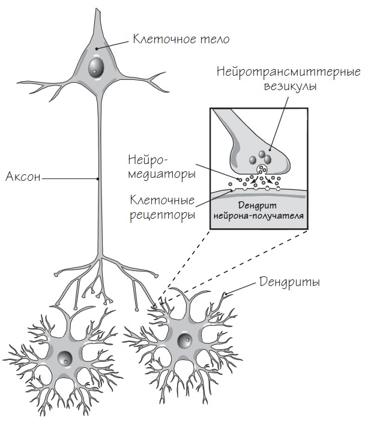

Строение нейрона и синапсаНейроны — главные кирпичики нервной системы. Их основная функция — передача сигналов по маленьким соединениям (синапсам). Хотя нейроны бывают разных видов, их строение и функции в целом схожи между собой. Работа нейронов в общем виде
Наш мозг — это приблизительно полтора килограмма ткани, которая содержит порядка 1,1 триллиона клеток, в том числе 100 миллиардов нейронов. В среднем каждый нейрон образует около пяти тысяч соединений с другими нейронами — так называемых синапсов. Клеточное тело нейрона выпускает отростки, которые называются дендритами. Они получают нейромедиаторы от других нейронов (некоторые нейроны взаимодействуют друг с другом через электрические импульсы.) Давайте представим один типичный нейрон. Он выделяет нейромедиатор под названием серотонин. Этот маленький нейрон является частью нервной системы, но и сам по себе он — сложная система, для работы которой требуется взаимодействие нескольких подсистем. Когда нейрон возбуждается, усики на кончиках его аксонов вбрасывают молекулы на синапсы — соединения, которые наш нейрон создал с другими нейронами. Если же это синапсы-получатели, то через них нейрон получает от других нейронов сигналы (обычно в форме химических элементов, которые называют нейротрансмиттерами). Сигнал указывает нейрону, возбуждаться или нет. Возбуждение нейрона зависит в основном от сочетания сигналов, получаемых в каждый конкретный момент. Когда же нейрон возбуждается, он начинает по синапсам посылать сигналы другим нейронам, передавая им сообщение: возбуждаться или нет. Типичный нейрон
Обычный нейрон возбуждается 5–50 раз в секунду. За время, которое потребуется вам на прочтение этого текста, у вас в голове будут переданы в буквальном смысле квадриллионы сигналов. На каждом нейроне порядка двухсот небольших пузырьков, везикул, полных серотонина. Каждый раз, когда нейрон возбуждается, открываются от пяти до десяти везикул. Если в среднем нейрон возбуждается десять раз в секунду, каждый усик опустошается раз в несколько секунд. Как следствие, маленькие молекулярные машинки должны либо производить новый серотонин, либо перерабатывать свободный серотонин, который плавает вокруг нейрона. После этого им нужно построить везикулы, наполнить их серотонином, довести до места действия на кончике каждого отростка. Согласитесь, здесь не обойтись без поддержания баланса между многими процессами, а значит, многие процессы могут пойти не так. И не будем забывать, что метаболизм серотонина — это лишь одна система из тысяч, функционирующих в вашем теле. Сильно упрощая, можно сказать, что общее возбуждение нейрона зависит от суммы всех возбуждающих и тормозящих сигналов, которые он получает в каждую миллисекунду. Когда нейрон возбуждается, по его аксону (отростку, по которому передаются сигналы) проходит электрохимическая волна. Она высвобождает нейротрансмиттеры, которые попадают на синапсы к нейронам-получателям и вызывают либо торможение, либо возбуждение. Синапс
Скорость передачи нервных сигналов увеличивается благодаря миелину — жировой субстанции, изолирующей аксоны. Серое вещество мозга по большей части состоит из клеточных тел нейронов. В состав белого вещества входят аксоны и глиальные клетки. Глиальные клетки осуществляют метаболическую поддержку — способствуют образованию миелиновой оболочки на аксонах и перерабатывают неиспользованные нейромедиаторы. Функционально клеточные тела нейронов похожи на сто миллиардов переключателей «Вкл./Выкл.», соединенных проводами-аксонами в сложнейшую сеть прямо в вашей голове. Каждый нервный сигнал — это бит информации. Нервная система перемещает информацию по вашему организму так же, как сердце качает кровь. Количество возможных комбинаций возбуждения или торможения сотни миллиардов нейронов составляет 10 в миллионной степени (то есть единица и еще миллион нулей). По сути, это и есть число возможных состояний вашего мозга. Чтобы лучше понять значение этого числа, сравним его с количеством атомов во Вселенной — «всего лишь» десять в восьмидесятой степени. Сознательные психические события основываются на временных комбинациях синапсов, которые формируются и распадаются (обычно в течение пары секунд), как вихри в потоке. Также нейроны способны создавать долгосрочные нервные цепи, соединения в которых усиливаются каждый раз, когда происходит определенная психическая активность. Вернуться на главную |